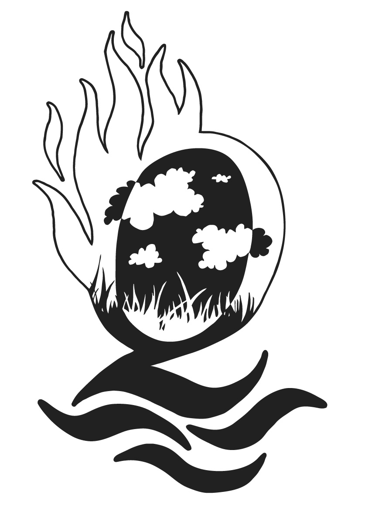

9e Lustrum
| Het collegejaar 2009–2010 staat bij ESMG Quadrivium geheel in het teken van haar 9e lustrum. Op 1 december jongstleden werd het lustrumjaar officieel ingeluid met een verjaardagsborrel en de presentatie van het lustrumboek. | |
|  | Onder het motto "Quadriviums 9e Symfonie der Elementen" hebben al tal van lustrumactiviteiten plaatsgevonden. Dit thema is gebaseerd op de letterlijke betekenis van Quadrivium, viersprong, en wordt vertaald in vier elementen met een eigen interpretatie: beweging, kracht, experiment en spektakel. De elementen lopen al het hele jaar als een rode draad door het lustrum, en komen terug in de programmering van het lustrumconcert. |
Muziek op de Dommel is ook onderdeel van het lustrumprogramma van ESMG Quadrivium en vormt de afsluiting van het lustrum in Eindhoven. Voor de vereniging zelf zal het feestjaar worden afgesloten met een Klippertournee op het IJsselmeer. Al zeilend met drie enorme klippers zullen de muzikanten van ESMG Quadrivium de plaatsen Medemblik, Enkhuizen, Hoorn en Amsterdam aandoen om er concerten te geven.
Voor een impressie en een overzicht van alle activiteiten kunt u terecht op de website van ESMG Quadrivium: www.studentenmuziek.nl